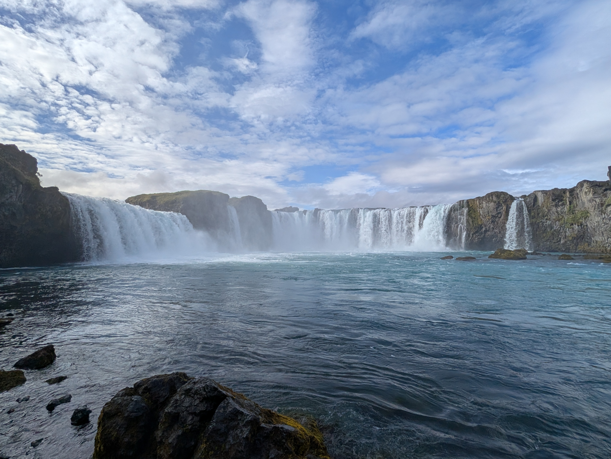
Goðafoss, Iceland Thursday Thursday, September 10, 2026 Goðafoss, Iceland
The roar of Goðafoss. Midges at Mývatn. Steam rising from the earth at Hverir. An ordinary Thursday in Iceland.
S/V Linden, East Greenland Thursday Thursday, September 3, 2026 East Greenland
Our last morning aboard the Linden . A week of fjords, icebergs, polar bears, long walks, and landscapes almost impossible to describe.
Read the travel summary: East Greenland aboard Linden →
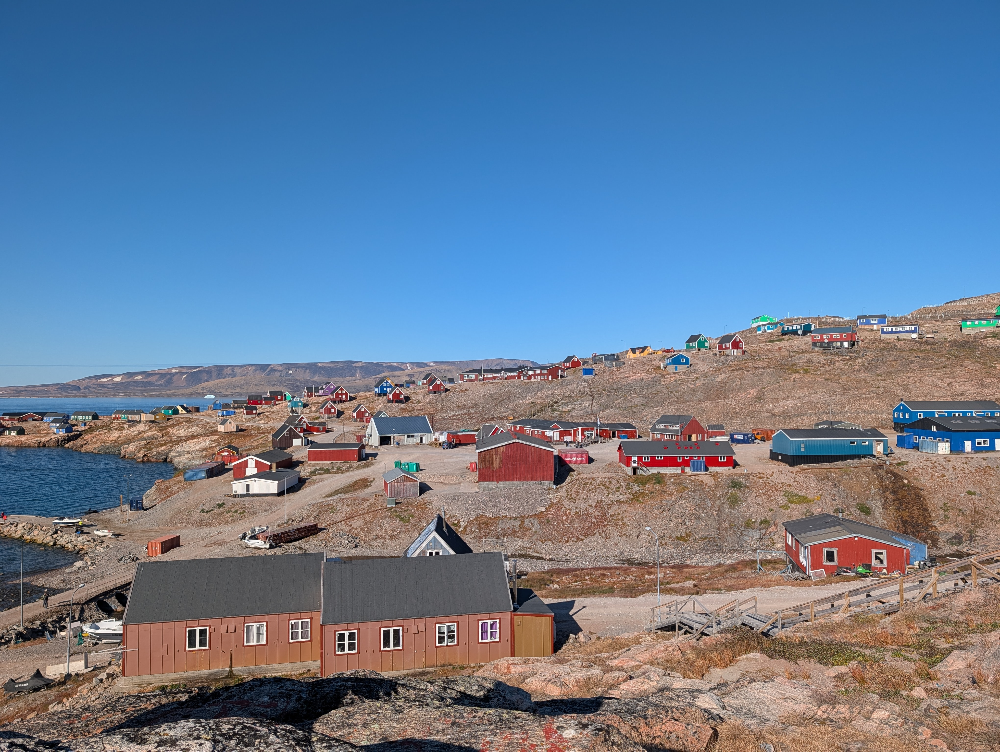
Ittoqqortoormiit, Greenland Thursday Thursday, August 27, 2026 Ittoqqortoormiit, Greenland
Awake around five and topside for a beautiful morning. We were anchored off Ittoqqortoormiit.
Read the travel summary: East Greenland aboard Linden →
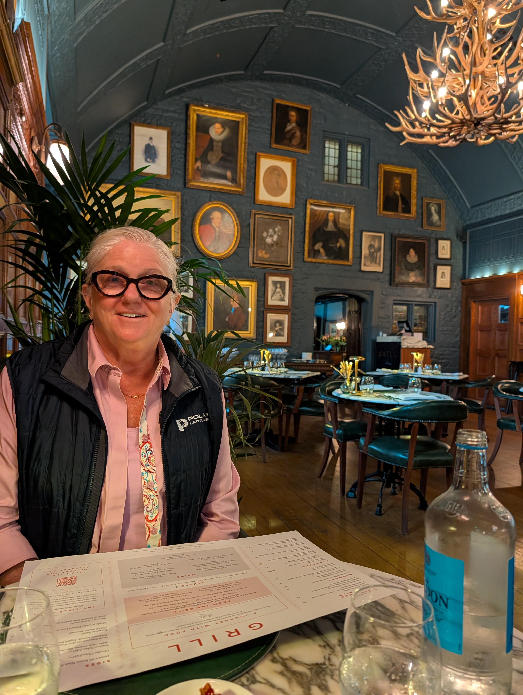
The Lygon Arms, Broadway, England Thursday Thursday, August 20, 2026 Broadway, England
Off the ship that morning and into the Cotswolds. One-lane roads, farms and countryside, a walk through Broadway, a burger and a pint.
Read the travel summary: Broadway & the Cotswolds →
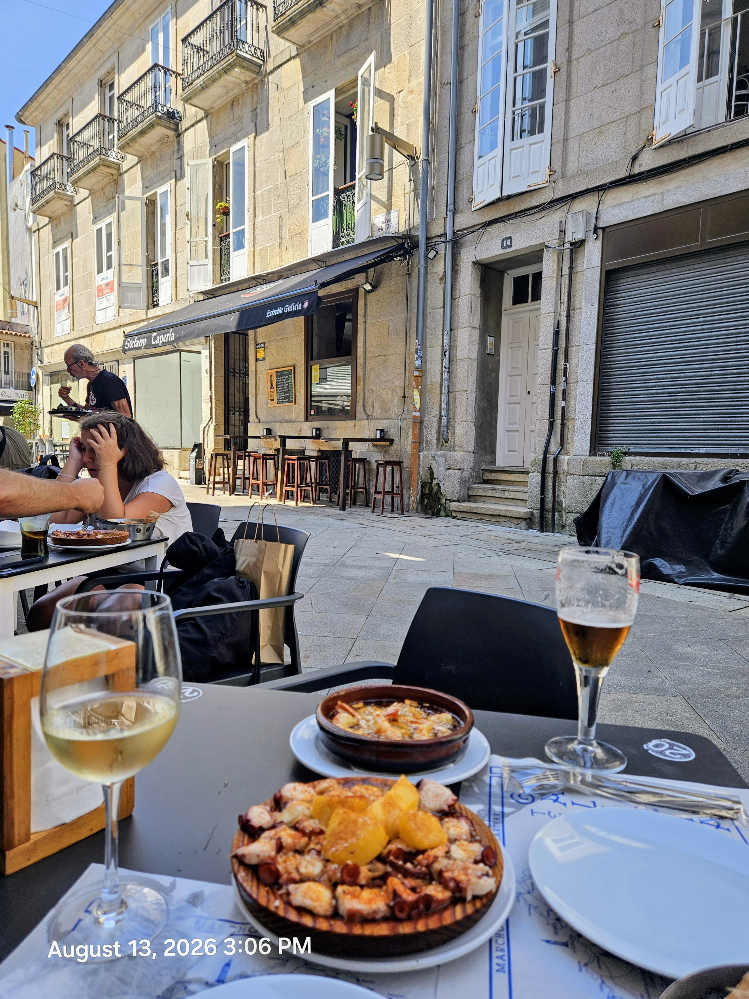
Stefany Taperia, Vigo, Spain Thursday Thursday, August 13, 2026 Vigo, Spain
Galician octopus, prawns, bread, a local beer, and €2.80 Albariño.
Read the travel summary: The Eclipse Cruise →
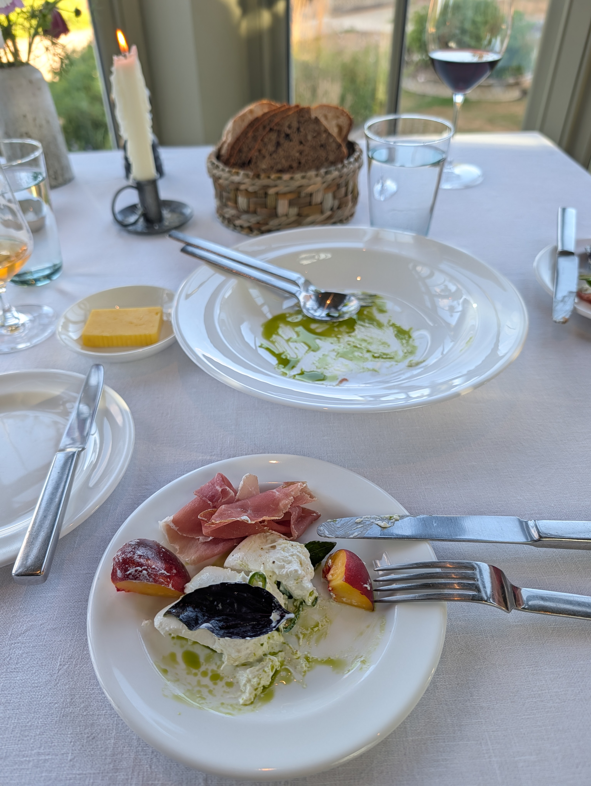
Heckfield Place, Hampshire, England Thursday Thursday, August 6, 2026 Heckfield Place, Hampshire, England
We declined the bread.
Read the travel summary: London & Heckfield Place →
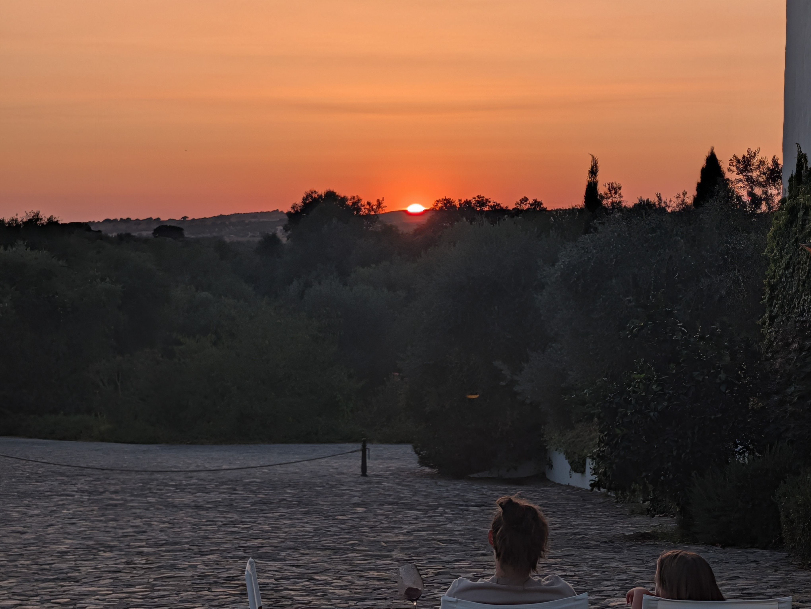
São Lourenço do Barrocal, Alentejo, Portugal Thursday Thursday, July 23, 2026 São Lourenço do Barrocal, Alentejo, Portugal
A beer for me. A glass of wine for Shirley. A warm breeze, birds settling in for the night, and the sun disappearing over the Alentejo.
Read the travel summary: Alentejo & São Lourenço do Barrocal →
Douro River, Portugal Thursday Thursday, July 16, 2026 Douro Valley, Portugal
The Douro outside our window. Riverboats passing by. Kayaking, paddleboarding, and a walk to a café.
Read the travel summary: Douro Valley →
Oualidia, Morocco Thursday Thursday, July 9, 2026 Oualidia, Morocco
A boat across the lagoon. Over the dunes to the Atlantic. For a while, we had the beach virtually to ourselves.
Read the travel summary: Oualidia →
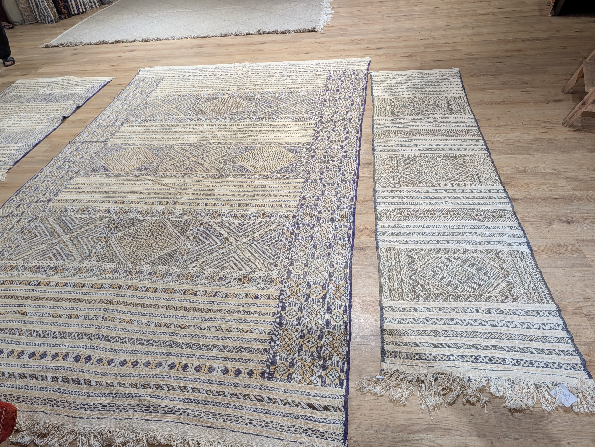
Marrakech, Morocco Thursday Thursday, July 2, 2026 Marrakech, Morocco
The Medina. Carved doors, patterned tile, rugs everywhere. We went into a gallery to look and came out having bought several.
Read the travel summary: Marrakech →
Thursday Thursday, June 25, 2026 Irvine, California
Our last Thursday at home.
Thursday Thursday, May 28, 2026 Bloomfield, New Mexico
Kendra's first day.
Thursday Thursday, May 14, 2026 Irvine, California
Yesterday we signed the offer to sell the house.
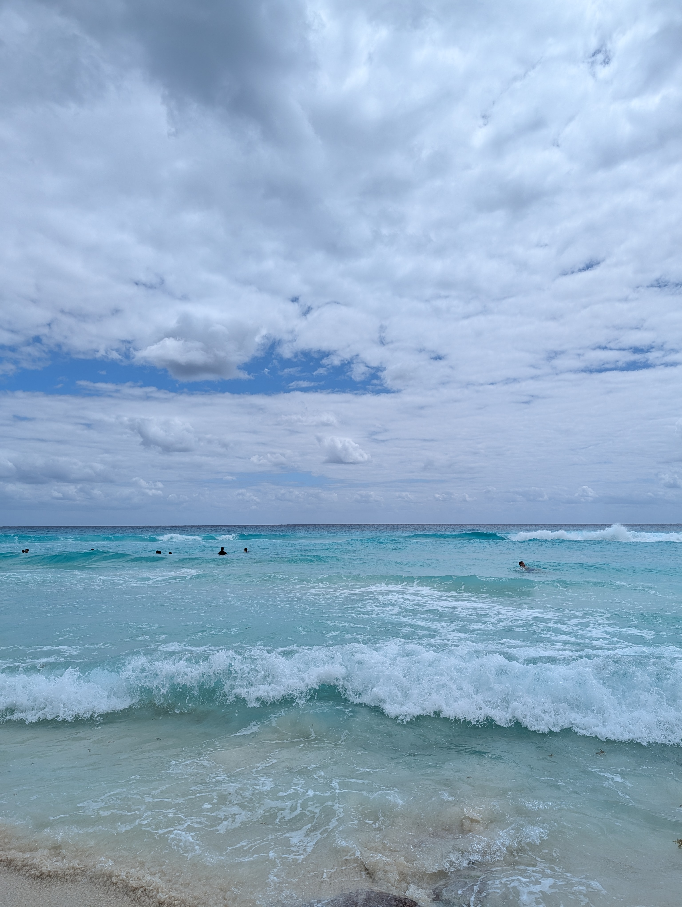
Cancún, Mexico Thursday Thursday, March 19, 2026 Cancún, Mexico
Turquoise water and a beautiful beach.
Read the travel summary: Cancún →
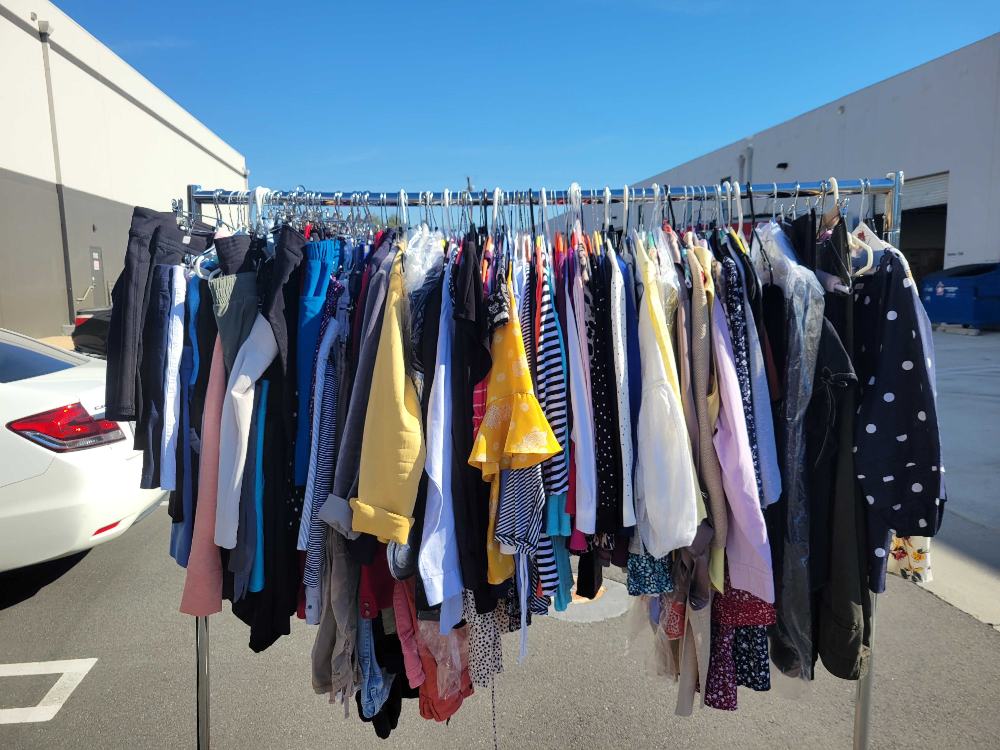
Clearing out the house, Irvine, California Thursday Thursday, February 26, 2026 Irvine, California
Years of possessions headed out the door.
Hermanus, South Africa Thursday Thursday, January 29, 2026 Hermanus, South Africa
A late breakfast, museums in town, appetizers and drinks, then a three-mile walk back along the coast.
Read the travel summary: Hermanus →
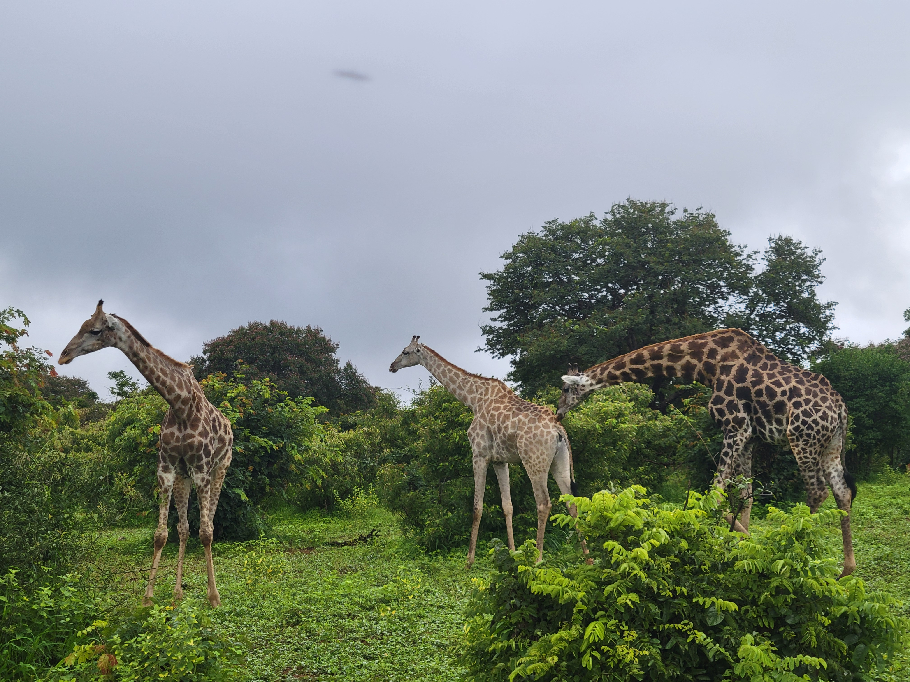
Chobe, Botswana Thursday Thursday, January 22, 2026 Chobe, Botswana
A 4:30 wake-up. Giraffes, impala, jackals, a leopard, and an elephant.
Read the travel summary: Botswana Safari →
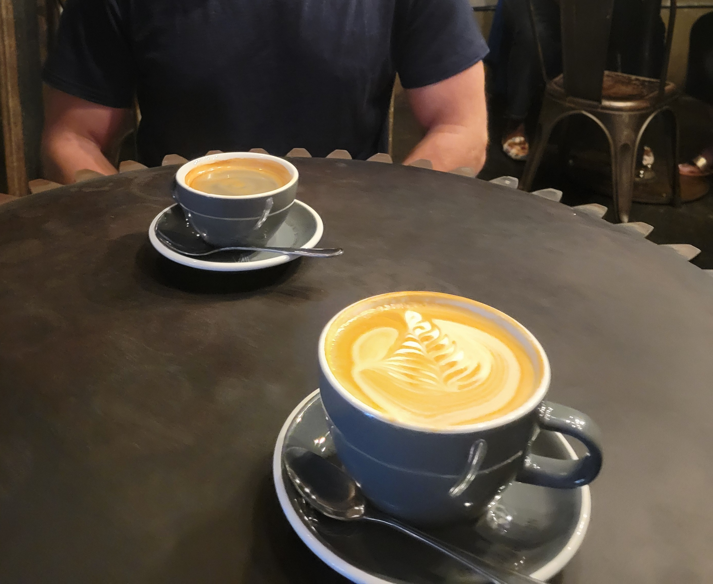
Truth Coffee, Cape Town, South Africa Thursday Thursday, January 15, 2026 Cape Town, South Africa
We stopped at Truth Coffee for what we thought would be coffee to go.
Read the travel summary: Cape Town →
At sea, off the west coast of Africa Thursday Thursday, January 8, 2026 At sea
Two sea days ahead before Walvis Bay, then one more before Cape Town. We were already sad that this part of the trip was coming to an end.
Read the travel summary: Namibia to Cape Town →
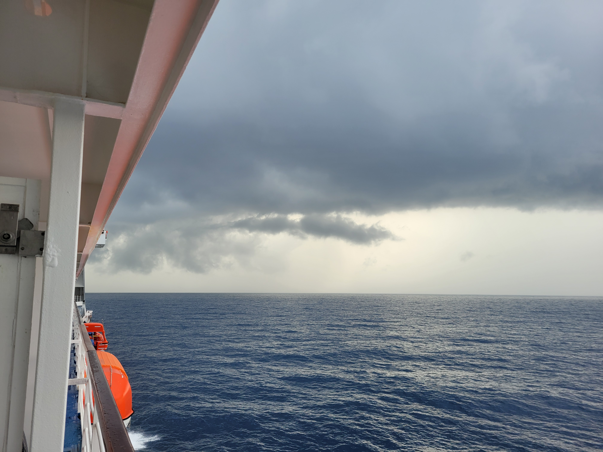
Off the coast of Liberia Thursday Thursday, January 1, 2026 At sea, off Liberia
New Year's Day. Thunder and lightning. Sailing in and out of rainstorms off the coast of Liberia.
Read the travel summary: West Africa →
At sea, off Western Sahara Thursday Thursday, December 25, 2025 At sea, off Western Sahara
Christmas Day. Somewhere off the coast of Western Sahara.
Read the travel summary: Barcelona to Cape Town →
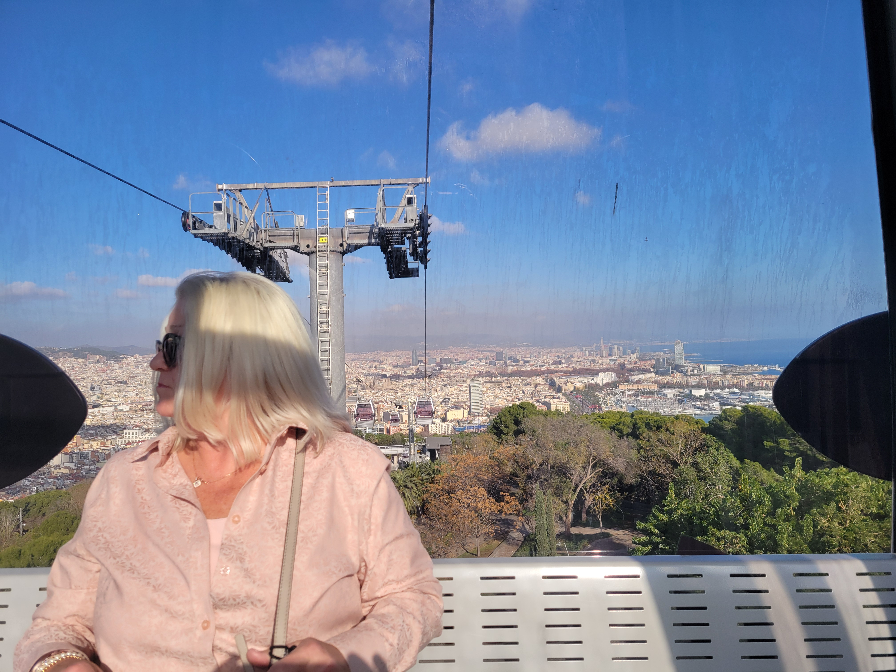
Montjuïc, Barcelona, Spain Thursday Thursday, December 18, 2025 Barcelona, Spain
The funicular was closed, so we walked partway up Montjuïc and took the cable car the rest of the way. The castle, another cable car down to the beach, a late lunch, Ciutadella Park, the Arc de Triomf, and the metro home.
Read the travel summary: Barcelona →
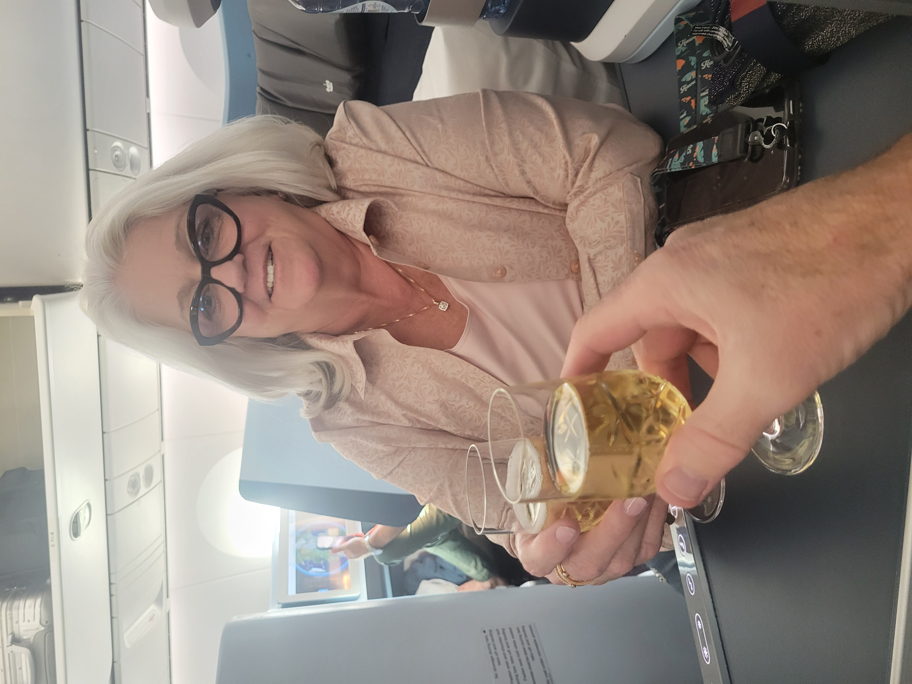
Air France lounge, LAX Thursday Thursday, December 11, 2025 Los Angeles, California
On our way to Barcelona.
Crystal Cove, California Thursday Thursday, November 27, 2025 Crystal Cove, California
Thanksgiving Day at Crystal Cove with Shirley and Laura.
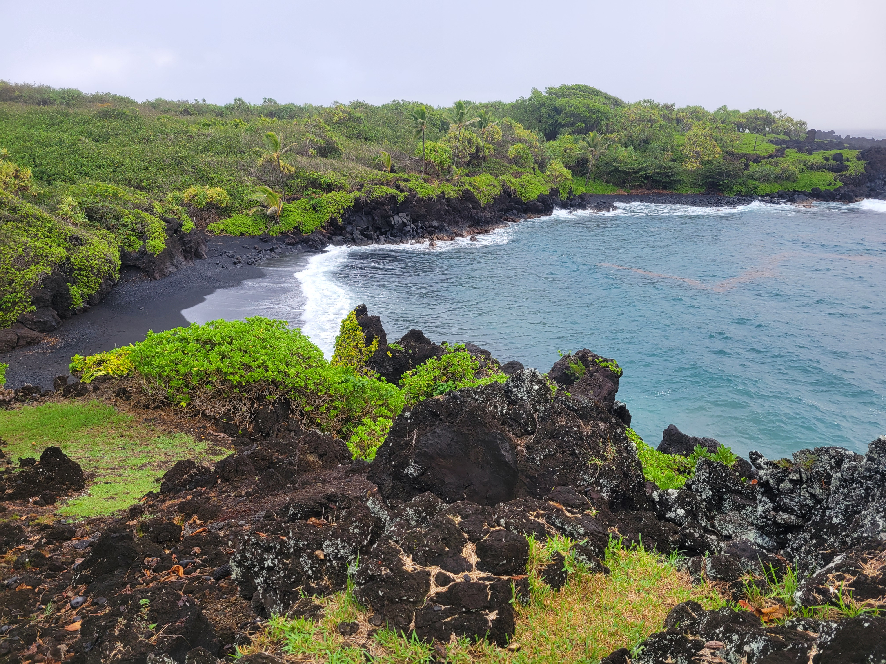
Waiʻānapanapa State Park, Maui Thursday Thursday, November 6, 2025 Waiʻānapanapa State Park, Maui
Rain nearly the entire hike.
Read the travel summary: Hana & Upcountry Maui →
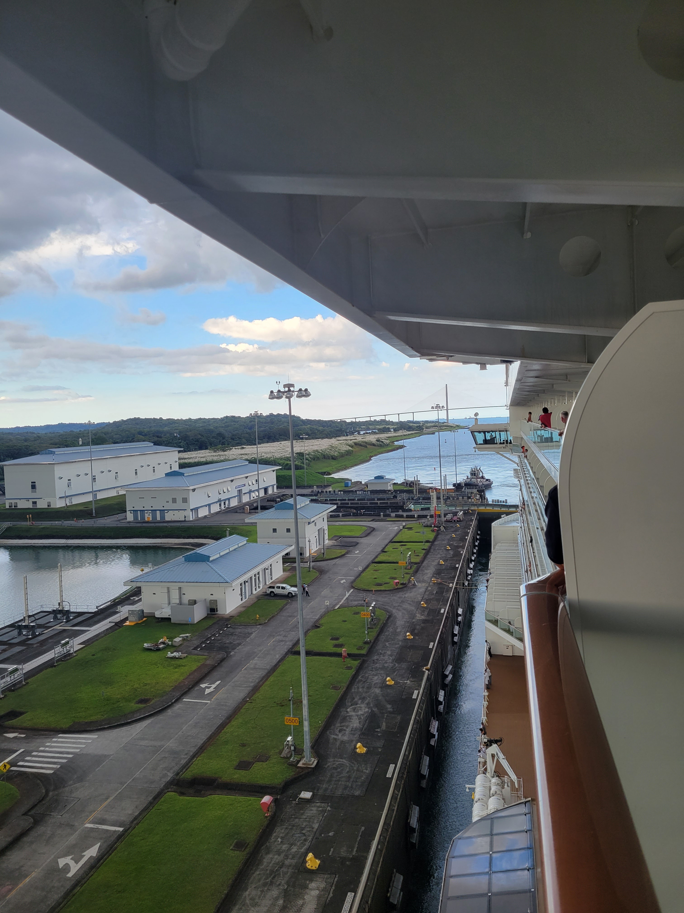
Panama Canal Thursday Thursday, October 16, 2025 Panama Canal
Through the locks today.
Read the travel summary: Panama Canal →
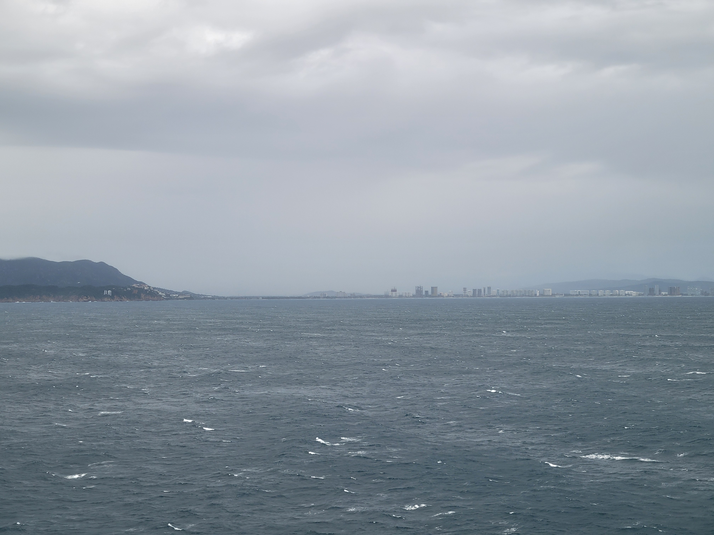
Off the coast of Mexico Thursday Thursday, October 9, 2025 Off the coast of Mexico
We were supposed to be in Acapulco.
Read the travel summary: Panama Canal →
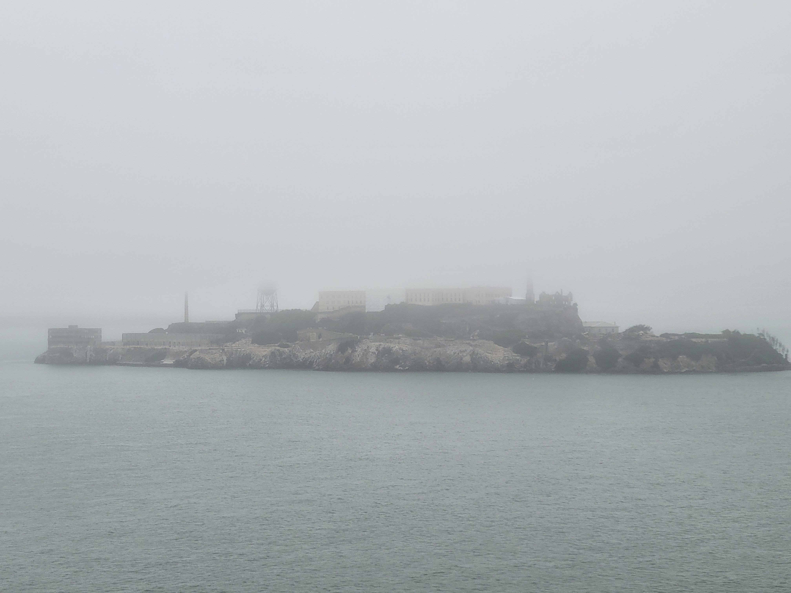
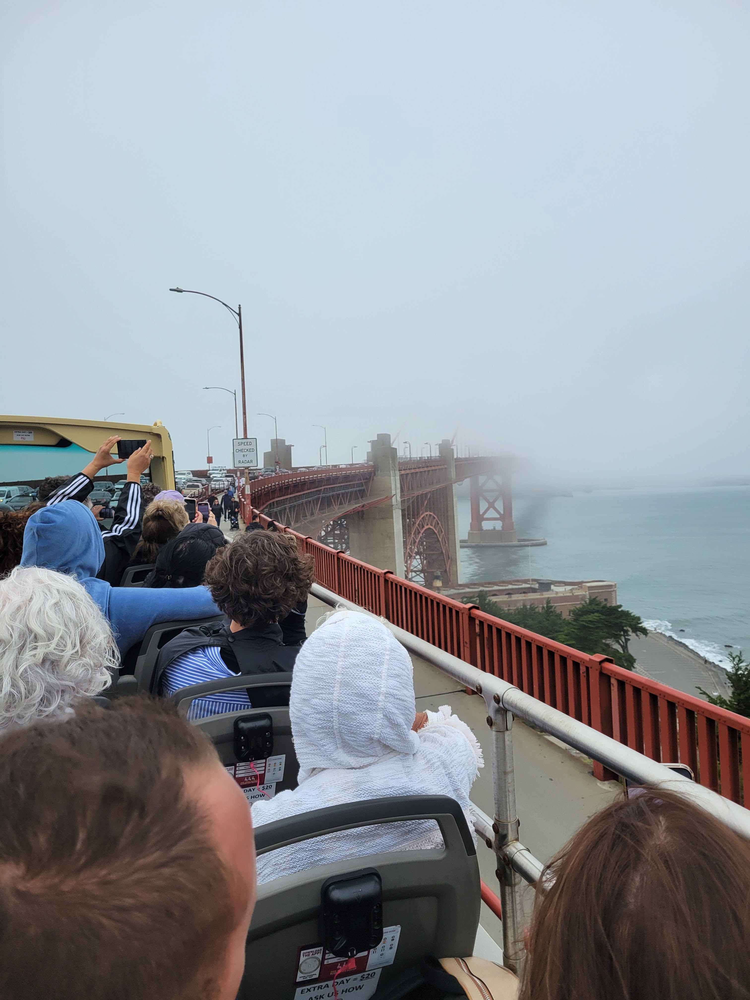
San Francisco, California Thursday Thursday, October 2, 2025 San Francisco, California
We sailed into San Francisco that morning, then spent the day exploring the city from the top of a bus.
Read the travel summary: Panama Canal →